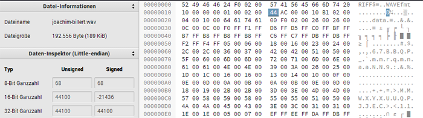
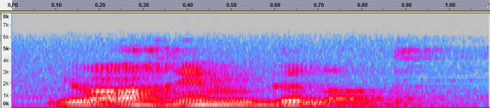
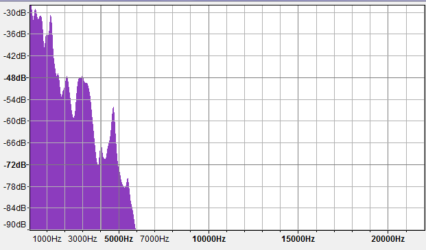

- 5.2 - Abtasttheorem
- a) Größe der Abtastrate
Bei einer Wave-Datei befindet sich die Information über die Abtastrate in den Bytes 24 bis 27 (Quelle: de.wikipedia.org/RIFF-WAVE). In diesem Fall sind es 44100 Hz.

Laut dem Abtasttheorem gilt: \( f_{Abtast} > 2\cdot f_{Orginal} \). Der Bereich des menschlichen Hörens liegt zwischen 2000 und 20000 Hz.
Heißt \( f_{Abtast} > 2\cdot 20 000 Hz = 40000 Hz \). Die Abtastfrequenz
muss also größer sein als 40 kHz.
- b) Manipulation der Abtastrate mit einem Hexeditor
Anmerkung: Die letzte Audiodatei könnte möglicherweise nicht abgespielt werden.
- c) Beobachtungen
Die Frage, wann meine Stimme nicht mehr zuerkennen ist, kann man unterschiedlich beantworten. Geht es dabei darum, ab wann es nicht mehr wie meine Stimme klingt, stimmt dies schon für 35 kHz. Interpretiert man die Frage allerdings so, dass gefragt ist ab wann das Gesagte nicht mehr zu verstehen ist, würde ich sagen ab 20 kHz.
Da die Audiodatei bereits aufgenommen und damit abgetastet wurde, verändert man mit Manipulation der Abtastrate via Hexeditor nicht wirklich die Abtastrate sondern nur die Information darüber. Öffnet man die Dateien in einem Audioprogramm (z.B. Audacity), versucht dieses, die Datei der angegebenen Abtastrate nach abzuspielen. Der Effekt ist eine Veränderung der Geschwindigkeit. Das Abtasttheorem greift nur bei bei der Aufnahme.
- c.1) Abtastrate ändern bei der Aufnahme
Beobachtung: Mit abnehmender Abtastfrequenz, nimmt die Verständlichkeit und die Qualität der Aufnahme ab, ebenso die Lautstärke. Die Aufnahme wird mal zu mal dumpfer. Bei einer Abtastfrequenz von 1000 Hz ist der Inhalt des Satzes kaum noch verständlich.
Je niedriger die Abtastfrequenz, desto weniger Punkte des analogen Signals werden mitgenommen. Das heißt, das Signal lässt sich nicht mehr orginalgeträu aus den diskreten Werten wiederherstellen. Das Ergebniss sind die oben genannten Beobachtungen.
- d) Höchste Frequenz

Es lässt sich ungefähr erkennen, dass die höchste Frequenz ungefähr bei 6000 Hz liegt. Zur Sicherheit kann man auch eine Frequenzanalyse laufen lassen, welche diese Ergebniss bestätigt.

Über die Formel \( f_{Abtast} \ge 2\cdot f_{Orginal} \) lässt sich dann eine Mindestfrequenz von \( 2\cdot 6000 Hz = 12000 Hz \), was irgendwie doch sehr niedrig ist, im Vergleich zur Standartabtastfrequenz bei Audio (\( 44100 Hz \)).
- 5.3 - Datenvolumen und Datenrate
Versandt werden sollen fünf 2-Terabyte-Festplatten mit Informationen. Die Gesamtgröße der Informationen beträgt also 10 Terabyte (= 10.000.000.000.000 Byte). Ein Byte besteht aus 8 Bit, d.h., 10 Terabyte sind also 80.000.000.000.000 Bit, was wiederum 80.000.000.000 kBit, 80.000.000 MBit und 80.000 GBit entspricht. Ziel ist das von Weimar 22 Km enfernte Erfurt.
- a) Transferzeiten
- Omas ISDN-Anschluss (64 kBit/s)
Um 80.000.000.000 kBit mit 64 kBit/s zu versenden, braucht man ca. 39,6 Jahre.
\[
\begin{align*}
\frac{80.000.000.000 \text{ kBit}}{64 \frac{\text{kBit}}{s}} &= 1.250.000.000 \text{ s}
\\ \\
\frac{1.250.000.000 \text{ s}}{31.536.000 (=60\cdot 60 \cdot 24\cdot 365)} &= 39.637 \text{ y}
\end{align*}
\]
- ADSL (1 MBit/s)
Hier wird es schon etwas kürzer. 80.000.000 MBit mit 1 MBit/s zuverschicken dauert nur noch ca. 2 \( \frac{1}{2} \) Jahre.
\[
\begin{align*}
\frac{80.000.000 \text{ MBit}}{1 \frac{\text{MBit}}{s}} &= 80.000.000 \text{ s}
\\ \\
\frac{80.000.000 \text{ s}}{31.536.000} &= 2.537 \text{ y} \approx 2,5 \text{ y}
\end{align*}
\]
- VDSL (25 MBit/s)
80.000.000 MBit mit 25 MBit/s zuverschicken braucht nur noch 0,1 Jahre bzw. 1,2 Monate oder 36,5 Tage...
\[
\begin{align*}
\frac{80.000.000 \text{ MBit}}{25 \frac{\text{MBit}}{s}} &= 3.200.000 \text{ s}
\\ \\
\frac{3.200.000 \text{ s}}{31.536.000} &= 0.1015 y
\end{align*}
\]
- Single Mode Faser (2 GBit/s)
Der Versand von 80.000 GBit mit 2 GBit/s dauert 11,111 Stunden oder auch 666,6667 Minuten.
\[
\begin{align*}
\frac{80.000 \text{ GBit}}{2 \frac{\text{GBit}}{s}} &= 40.000 \text{ s}
\\ \\
\frac{40.000 \text{ s}}{60\cdot 60} &= 11,111 \text{ h}
\end{align*}
\]
- Schwalbe (Moped) (62 Km/h)
Das Moped fährt im Schnitt 62 Km/h. In das 22 Km entfernte Erfurt braucht man damit also nur 21,3 Minuten. Da es aber noch 10 Minuten lang angeschoben werden muss, braucht man 31,3 Minuten. Mit Schwalbe geht es damit aber trotzdem am schnellsten.
- 5.4 - Textanalyse N-Gramme
Das N-Gram Tool lässt sich ganz einfach über die Kommandozeile bedienen. Für unsere Zwecke brauchen wir die Funktion text2ngram. Notwendig ist auch das Anlegen einer Textdatei mit dem gefragten Ausschnitt (hier pompe.txt). Mit dem Befehl text2ngram -nx bpompe.txt werden uns die x-Wort-Gramme ausgegeben. Mit dem Zusatz -c bekommen wir die einzelnen Zeichen. Zusätlich lassen sich mit --nopunct Satzzeichen wie Punkt, Komma etc. herausfiltern. Am Ende kann man sich noch die Ausgabe mit > bpompe_nx.txt in einer neuen Textdatei speichern lassen. Dabei steht das x für 1,2 oder 3.
Der ganze Befehl sieht dann wie folgt aus:
C:\ngrammetools>text2ngram --nopunct -c -nx bpompe.txt > bpompe_nx.txt
- b)
Hier nun die Liste aller Uni-, Bi- und Trigramme. Jeder Wert mit seiner entsprechnden Häufigkeit (in Klammmern).
Oder hier auch als verlinkte Datei:
Unigramme (Anzahl verschiedener Unigramme: 71)
C:\ngrammetools>text2ngram --nopunct -c -n1 bpompe.txt > bpompe_n1.txt
| 0 (10) |
1 (43) |
2 (11) |
3 (1) |
4 (8) |
5 (5) |
6 (6) |
7 (4) |
8 (11) |
9 (16) |
| A (44) |
B (55) |
C (18) |
D (66) |
E (52) |
F (16) |
G (23) |
H (13) |
I (99) |
J (16) |
| K (31) |
L (8) |
M (33) |
N (32) |
O (7) |
P (15) |
Q (8) |
R (17) |
S (85) |
T (23) |
| U (11) |
V (14) |
W (49) |
Y (1) |
Z (17) |
a (728) |
b (214) |
c (431) |
d (587) |
e (2343) |
| f (283) |
g (417) |
h (589) |
i (1306) |
j (12) |
k (175) |
l (446) |
m (395) |
n (1610) |
o (499) |
| p (101) |
q (7) |
r (1083) |
s (815) |
t (903) |
u (537) |
v (97) |
w (185) |
x (13) |
y (35) |
| z (136) |
Ä (1) |
Ü (12) |
ß (36) |
ä (65) |
ö (29) |
ü (66) |
– (22) |
— (5) |
“ (16) |
| „ (16) |
Bigramme (Anzahl verschiedener Bigramme: 677)
C:\ngrammetools>text2ngram --nopunct -c -n2 bpompe.txt > bpompe_n2.txt
- 01 (2)
- 0e (2)
- 10 (5)
- 11 (2)
- 12 (1)
- 15 (1)
- 16 (1)
- 18 (2)
- 19 (13)
- 1A (1)
- 1D (1)
- 1E (1)
- 1I (1)
- 1K (1)
- 1z (1)
- 20 (1)
- 24 (1)
- 28 (3)
- 29 (1)
- 2D (1)
- 2I (1)
- 46 (1)
- 48 (5)
- 49 (1)
- 50 (1)
- 56 (2)
- 60 (1)
- 65 (1)
- 72 (1)
- 77 (1)
- 7u (1)
- 86 (1)
- 87 (1)
- 92 (4)
- 94 (7)
- 95 (1)
- 9s (1)
- Ab (6)
- Al (6)
- Am (2)
- An (5)
- Ap (2)
- Ar (2)
- As (6)
- Au (14)
- Be (39)
- Bi (5)
- Bo (1)
- Br (1)
- Bu (6)
- Ch (2)
- Ci (1)
- Cl (2)
- Co (12)
- Cy (1)
- DN (2)
- Da (20)
- De (19)
- Di (22)
- Do (2)
- Dr (1)
- Ei (15)
- El (2)
- Em (4)
- En (18)
- Er (8)
- Es (1)
- Et (2)
- Ev (1)
- Fa (1)
- Fe (2)
- Fi (1)
- Fl (1)
- Fo (6)
- Fu (1)
- Fä (3)
- Fü (1)
- Ga (1)
- Ge (15)
- Gr (6)
- Gö (1)
- Ha (5)
- Hi (7)
- Hu (1)
- IS (1)
- Im (4)
- In (94)
- Ja (12)
- Je (2)
- Jo (1)
- Ju (1)
- Ka (10)
- Ke (1)
- Ki (2)
- Kl (1)
- Ko (13)
- Ku (2)
- Ky (1)
- La (3)
- Le (3)
- Li (2)
- Ma (11)
- Me (9)
- Mi (6)
- Mo (2)
- Mu (2)
- Mä (1)
- Mö (2)
- NS (1)
- Na (18)
- Ne (6)
- Ni (3)
- No (1)
- Nu (1)
- Ny (1)
- Ob (2)
- Op (2)
- Or (3)
- Pa (2)
- Pe (3)
- Ph (4)
- Po (1)
- Pr (4)
- Ps (1)
- Qu (8)
- Ra (4)
- Re (11)
- Ro (2)
- SD (1)
- Sa (1)
- Sc (9)
- Se (8)
- Sh (9)
- Si (15)
- So (6)
- Sp (10)
- St (10)
- Su (4)
- Sy (10)
- Sz (1)
- S– (1)
- Ta (5)
- Te (5)
- Td (6)
- Ti (1)
- To (1)
- Tr (4)
- Tä (1)
- Um (4)
- Un (7)
- Ve (8)
- Vi (2)
- Vo (4)
- WW (8)
- Wa (4)
- We (14)
- Wh (1)
- Wi (14)
- Wo (3)
- Wä (1)
- Yo (1)
- Ze (8)
- Zu (8)
- Zü (1)
- aa (1)
- ab (31)
- ac (37)
- ad (4)
- af (10)
- ag (29)
- ah (20)
- ai (4)
- ak (11)
- al (80)
- am (20)
- an (117)
- ao (1)
- ap (2)
- ar (49)
- as (33)
- at (149)
- au (94)
- av (1)
- ax (2)
- az (2)
- aß (17)
- ba (9)
- bb (2)
- be (120)
- bg (3)
- bh (2)
- bi (19)
- bj (3)
- bl (4)
- bn (1)
- bo (2)
- br (10)
- bs (12)
- bt (6)
- bu (4)
- bw (1)
- bz (6)
- bü (1)
- ca (5)
- ce (3)
- ch (384)
- ck (23)
- co (14)
- cs (2)
- d3 (1)
- da (41)
- de (267)
- df (1)
- di (120)
- dk (1)
- dl (11)
- dm (2)
- dn (3)
- do (5)
- dp (1)
- dr (10)
- ds (2)
- dt (4)
- du (26)
- dy (4)
- dz (1)
- dü (2)
- e1 (1)
- eA (1)
- eB (3)
- eD (2)
- eE (3)
- eG (2)
- eI (1)
- eK (1)
- eO (1)
- eQ (1)
- eS (1)
- eV (1)
- eW (1)
- ea (9)
- eb (30)
- ec (29)
- ed (33)
- ee (4)
- ef (9)
- eg (46)
- eh (43)
- ei (262)
- ek (22)
- el (101)
- em (64)
- en (543)
- eo (25)
- ep (2)
- eq (2)
- er (512)
- es (136)
- et (50)
- eu (28)
- ev (2)
- ew (10)
- ex (10)
- ey (3)
- ez (9)
- eß (6)
- e– (1)
- fW (1)
- fa (7)
- fb (2)
- fe (27)
- ff (33)
- fg (7)
- fi (23)
- fl (5)
- fn (1)
- fo (101)
- fr (6)
- fs (2)
- ft (18)
- fu (1)
- fä (7)
- fü (16)
- gD (1)
- gI (1)
- gK (1)
- gU (1)
- ga (13)
- gb (1)
- gd (1)
- ge (171)
- gi (21)
- gk (8)
- gl (20)
- gm (1)
- gn (8)
- go (4)
- gr (35)
- gs (12)
- gt (13)
- gu (14)
- gv (3)
- gy (1)
- gz (3)
- gü (1)
- g“ (1)
- h1 (1)
- ha (42)
- hb (2)
- hd (1)
- he (183)
- hf (1)
- hh (1)
- hi (23)
- hk (5)
- hl (19)
- hm (5)
- hn (32)
- ho (8)
- hr (59)
- hs (17)
- ht (57)
- hu (11)
- hw (7)
- hy (5)
- hä (10)
- hö (3)
- h– (3)
- ia (5)
- ib (5)
- ic (146)
- id (5)
- ie (266)
- if (32)
- ig (63)
- ih (11)
- ik (27)
- il (31)
- im (32)
- in (245)
- io (114)
- ip (5)
- ir (30)
- is (128)
- it (122)
- iu (1)
- iv (18)
- ix (1)
- iz (1)
- iß (4)
- ja (1)
- je (11)
- ka (25)
- ke (39)
- kl (10)
- kn (1)
- ko (18)
- kr (2)
- ks (2)
- kt (39)
- ku (14)
- kö (5)
- kü (3)
- la (20)
- lb (8)
- lc (12)
- ld (14)
- le (95)
- lf (1)
- lg (16)
- lh (1)
- li (78)
- lk (1)
- ll (61)
- lm (3)
- ln (7)
- lo (8)
- ls (21)
- lt (33)
- lu (14)
- lw (7)
- ly (1)
- lz (1)
- lä (5)
- lö (1)
- lü (2)
- l– (2)
- mN (1)
- ma (130)
- me (62)
- mg (2)
- mi (39)
- mm (31)
- mo (9)
- mp (15)
- ms (2)
- mt (5)
- mu (15)
- mw (3)
- mz (2)
- mö (6)
- mü (4)
- nA (1)
- nB (2)
- nE (2)
- nK (2)
- nM (1)
- nR (1)
- nS (1)
- nT (2)
- nV (1)
- nW (2)
- nZ (1)
- na (46)
- nb (6)
- nc (4)
- nd (161)
- ne (166)
- nf (97)
- ng (149)
- nh (8)
- ni (60)
- nk (13)
- nl (12)
- nm (3)
- nn (58)
- no (16)
- np (1)
- nr (1)
- ns (125)
- nt (81)
- nu (16)
- nv (4)
- nw (6)
- nz (16)
- nä (4)
- nö (2)
- nü (1)
- n– (5)
- n“ (5)
- n„ (1)
- ob (6)
- oc (12)
- od (32)
- oe (1)
- of (8)
- og (7)
- oh (3)
- ok (1)
- ol (21)
- om (27)
- on (163)
- op (7)
- or (170)
- os (4)
- ot (6)
- ou (3)
- ov (2)
- ow (2)
- oz (1)
- oß (3)
- o– (1)
- pa (8)
- pe (21)
- pf (6)
- ph (4)
- pi (14)
- pl (9)
- pp (3)
- pr (22)
- pt (6)
- pu (7)
- pä (1)
- qu (7)
- rB (1)
- rI (2)
- rK (2)
- rN (1)
- rQ (1)
- rS (1)
- rZ (1)
- ra (70)
- rb (13)
- rc (18)
- rd (52)
- re (108)
- rf (19)
- rg (17)
- rh (11)
- ri (96)
- rk (19)
- rl (12)
- rm (104)
- rn (20)
- ro (19)
- rp (4)
- rr (9)
- rs (45)
- rt (49)
- ru (44)
- rv (6)
- rw (11)
- ry (1)
- rz (10)
- rä (6)
- rö (4)
- rü (14)
- r– (1)
- r“ (1)
- r„ (1)
- sB (1)
- sD (1)
- sS (1)
- sa (27)
- sb (12)
- sc (111)
- sd (4)
- se (116)
- sf (2)
- sg (4)
- sh (2)
- si (71)
- sj (1)
- sk (4)
- sl (2)
- sm (7)
- so (27)
- sp (33)
- sq (3)
- ss (45)
- st (160)
- su (8)
- sv (1)
- sw (5)
- sy (4)
- sz (7)
- sä (6)
- sü (2)
- s– (4)
- s— (1)
- s“ (1)
- t1 (1)
- t5 (1)
- ta (55)
- tb (1)
- td (3)
- te (205)
- tf (1)
- tg (1)
- th (28)
- ti (172)
- tj (2)
- tk (2)
- tl (15)
- tm (1)
- to (12)
- tp (1)
- tr (39)
- ts (23)
- tt (15)
- tu (32)
- tv (3)
- tw (20)
- ty (3)
- tz (25)
- tä (17)
- tö (4)
- tü (3)
- t– (1)
- t“ (2)
- ua (4)
- ub (4)
- uc (29)
- ud (2)
- ue (16)
- uf (29)
- ug (3)
- ui (9)
- uk (2)
- ul (5)
- um (19)
- un (219)
- up (3)
- ur (62)
- us (71)
- ut (25)
- uv (1)
- uw (1)
- uß (3)
- vI (1)
- va (1)
- ve (45)
- vi (9)
- vo (35)
- wa (18)
- we (80)
- wi (62)
- wo (5)
- wu (9)
- wä (3)
- xe (5)
- xi (5)
- xp (1)
- xt (1)
- yb (2)
- yc (1)
- ym (2)
- yn (6)
- yq (1)
- ys (17)
- zb (1)
- ze (36)
- zi (14)
- zl (1)
- zm (1)
- zt (6)
- zu (59)
- zw (9)
- zü (1)
- z“ (1)
- Äh (1)
- Üb (12)
- ßb (2)
- ße (8)
- ßl (3)
- ßt (9)
- ßv (1)
- äc (9)
- äf (1)
- äg (6)
- äh (5)
- äl (6)
- än (17)
- är (5)
- ät (11)
- äu (4)
- äß (1)
- öf (2)
- ög (7)
- öh (2)
- öm (1)
- ön (3)
- ör (9)
- ös (1)
- öt (2)
- öß (2)
- üb (18)
- üc (6)
- üg (3)
- üh (8)
- ül (2)
- ün (8)
- üp (1)
- ür (17)
- üs (3)
- –C (2)
- –D (3)
- –Q (1)
- –S (1)
- –V (1)
- –f (2)
- –o (1)
- –s (3)
- “1 (3)
- „A (1)
- „B (1)
- „E (1)
- „I (3)
- „N (1)
- „T (1)
- „b (1)
- „d (1)
- „e (1)
- „f (1)
- „i (1)
- „k (2)
- „Ü (1)
Trigramme (Anzahl verschiedener Trigramme: 2070)
C:\ngrammetools>text2ngram --nopunct -c -n3 bpompe.txt > bpompe_n.txt
- 010 (2)
- 0er (2)
- 101 (2)
- 11A (1)
- 186 (1)
- 187 (1)
- 192 (4)
- 194 (7)
- 195 (1)
- 1Au (1)
- 1De (1)
- 1Ei (1)
- 1In (1)
- 1zu (1)
- 2Di (1)
- 2In (1)
- 50e (1)
- 60e (1)
- 7un (1)
- 865 (1)
- 872 (1)
- 924 (1)
- 928 (2)
- 929 (1)
- 946 (1)
- 948 (5)
- 949 (1)
- 956 (1)
- 9su (1)
- Abb (2)
- Abe (3)
- Abs (1)
- Alg (1)
- All (5)
- Ame (2)
- Ana (1)
- And (1)
- Ank (1)
- Anl (1)
- Anw (1)
- App (2)
- Arb (1)
- Art (1)
- Asp (6)
- Auc (1)
- Auf (3)
- Aus (10)
- Bed (7)
- Beg (15)
- Bei (4)
- Bel (4)
- Bem (2)
- Ber (1)
- Bes (2)
- Bet (1)
- Bew (1)
- Bez (2)
- Bil (2)
- Bio (1)
- Bis (1)
- Bol (1)
- Bri (1)
- Buc (6)
- Cha (2)
- Cit (1)
- Cla (2)
- Cod (10)
- Com (2)
- Cyb (1)
- DNS (1)
- Dab (3)
- Dad (1)
- Dam (3)
- Dan (1)
- Dar (1)
- Das (8)
- Dat (3)
- Dec (3)
- Def (1)
- Den (2)
- Der (12)
- Des (1)
- Die (18)
- Dig (2)
- Dis (2)
- Dop (1)
- Dor (1)
- Dre (1)
- Eig (3)
- Ein (12)
- Ele (2)
- Emp (4)
- End (1)
- Ene (6)
- Ent (11)
- Erd (1)
- Erf (4)
- Erg (1)
- Erh (1)
- Erz (1)
- Ety (2)
- Evo (1)
- Fau (1)
- Fer (1)
- Fes (1)
- Fin (1)
- Flo (1)
- Fol (2)
- For (4)
- Fun (1)
- Fäh (1)
- Fäl (2)
- Fül (1)
- Gab (1)
- Geb (5)
- Geg (3)
- Gen (1)
- Ges (5)
- Gew (1)
- Gre (3)
- Gru (2)
- Grö (1)
- Gör (1)
- Hab (1)
- Han (1)
- Har (2)
- Hau (1)
- Hie (4)
- Him (1)
- Hin (2)
- Hum (1)
- ISD (1)
- Inf (84)
- Ing (1)
- Ins (1)
- Int (2)
- Jah (12)
- Jed (2)
- Jou (1)
- Jul (1)
- Kan (6)
- Kap (1)
- Kat (3)
- Ker (1)
- Kin (2)
- Kla (1)
- Kom (9)
- Kon (3)
- Kot (1)
- Kun (2)
- Kyb (1)
- Lab (1)
- Lau (2)
- Leb (1)
- Lei (1)
- Let (1)
- Lic (2)
- Mac (1)
- Mag (1)
- Mai (1)
- Mat (6)
- Maß (2)
- Men (9)
- Mik (1)
- Mil (1)
- Mit (4)
- Mom (1)
- Mon (1)
- Mul (1)
- Mus (1)
- Mär (1)
- Mög (1)
- Möh (1)
- NS– (1)
- Nac (13)
- Nam (1)
- Nat (4)
- Ner (1)
- Net (1)
- Neu (3)
- New (1)
- Nim (1)
- Niv (2)
- Nor (1)
- Nur (1)
- Nyq (1)
- Obe (1)
- Obj (1)
- Ope (1)
- Opt (1)
- Ord (2)
- Ori (1)
- Paa (1)
- Pac (1)
- Peg (1)
- Per (1)
- Pes (1)
- Pho (1)
- Phy (3)
- Pot (1)
- Pra (1)
- Pre (1)
- Pro (2)
- Psy (1)
- Qua (2)
- Que (6)
- Rad (2)
- Rau (2)
- Rea (3)
- Rec (3)
- Red (2)
- Ref (1)
- Ren (2)
- Roh (1)
- Rol (1)
- SDN (1)
- Sat (1)
- Sch (9)
- Sei (1)
- Sek (1)
- Sel (2)
- Sem (1)
- Sen (3)
- Sha (8)
- Sho (1)
- Sic (1)
- Sie (4)
- Sig (4)
- Sin (6)
- Sol (2)
- Spa (1)
- Spe (4)
- Spr (4)
- Spu (1)
- Sta (2)
- Sto (3)
- Str (2)
- Stö (3)
- Sub (3)
- Sup (1)
- Sys (10)
- Szi (1)
- S–D (1)
- Tag (3)
- Tat (2)
- Tec (1)
- Tei (1)
- Tel (2)
- Tex (1)
- the (6)
- Tit (1)
- Tom (1)
- Tra (3)
- Trä (1)
- Täg (1)
- Umg (1)
- Umw (2)
- Uni (2)
- Uns (1)
- Unt (4)
- Ver (8)
- Vie (2)
- Vor (4)
- WWW (4)
- Wah (2)
- Wan (1)
- Was (1)
- Web (1)
- Wec (3)
- Weg (1)
- Wei (6)
- Wer (2)
- Wes (1)
- Whe (1)
- Wid (1)
- Wie (4)
- Wir (5)
- Wis (4)
- Wor (3)
- Wäh (1)
- Yor (1)
- Zei (8)
- Zum (1)
- Zus (7)
- Züg (1)
- aar (1)
- abe (17)
- abg (3)
- abh (2)
- abo (2)
- abr (1)
- abs (3)
- abu (1)
- ach (35)
- ack (2)
- ade (1)
- adi (2)
- adu (1)
- aft (9)
- afü (1)
- aga (1)
- age (15)
- agm (1)
- agn (1)
- ags (1)
- agt (1)
- agu (8)
- ahe (3)
- ahn (1)
- ahr (16)
- aik (1)
- ain (1)
- ais (2)
- akt (11)
- alb (2)
- alc (2)
- ale (12)
- alf (1)
- ali (11)
- alk (1)
- all (15)
- aln (1)
- als (13)
- alt (7)
- alw (1)
- aly (1)
- al– (2)
- ame (2)
- ami (8)
- amm (8)
- amt (1)
- ana (8)
- anc (2)
- and (19)
- ane (3)
- ang (15)
- ani (7)
- ank (1)
- anl (1)
- ann (32)
- ans (2)
- ant (6)
- anz (4)
- aos (1)
- apa (1)
- api (1)
- ara (6)
- arb (5)
- arc (1)
- ard (1)
- are (8)
- arf (1)
- ark (2)
- arn (1)
- ars (2)
- art (9)
- aru (2)
- arü (2)
- asS (1)
- ase (2)
- asi (1)
- asp (1)
- ass (6)
- ast (1)
- ate (13)
- atd (3)
- ati (108)
- ato (4)
- ats (4)
- att (3)
- atu (7)
- atz (1)
- atü (3)
- aub (1)
- auc (18)
- aud (1)
- aue (2)
- auf (19)
- aum (2)
- aun (2)
- aup (2)
- aus (43)
- aut (3)
- ave (1)
- axi (2)
- azi (1)
- azu (1)
- aße (3)
- aßt (4)
- bar (7)
- bau (2)
- bbi (1)
- bed (4)
- bee (1)
- beg (13)
- bei (19)
- bel (3)
- ben (16)
- ber (48)
- bes (10)
- bet (2)
- bew (2)
- bez (1)
- bge (3)
- bhä (2)
- bie (1)
- big (3)
- bil (9)
- bin (1)
- bio (1)
- bis (4)
- bje (3)
- ble (1)
- bli (3)
- bni (1)
- bor (2)
- bra (8)
- bre (1)
- bru (1)
- bsc (2)
- bse (1)
- bst (9)
- bte (1)
- bun (3)
- bur (1)
- bwo (1)
- bzw (6)
- bür (1)
- cal (2)
- cat (3)
- cen (1)
- ch1 (1)
- cha (13)
- chb (1)
- chd (1)
- che (114)
- chf (1)
- chh (1)
- chi (13)
- chk (5)
- chl (11)
- chn (23)
- cho (3)
- chr (18)
- chs (17)
- cht (53)
- chu (2)
- chw (7)
- chä (3)
- ch– (3)
- cke (7)
- ckl (6)
- cks (2)
- ckt (3)
- cku (1)
- cod (9)
- com (4)
- con (1)
- cso (1)
- dab (2)
- dac (1)
- daf (1)
- dam (1)
- dan (9)
- dar (7)
- das (9)
- dau (1)
- daz (1)
- daß (9)
- deB (1)
- deE (1)
- dec (2)
- del (1)
- dem (9)
- den (75)
- der (116)
- des (29)
- det (5)
- deu (10)
- dfü (1)
- die (102)
- dig (6)
- din (6)
- dio (2)
- dir (2)
- dis (2)
- dkr (1)
- dla (1)
- dle (1)
- dli (8)
- dlu (1)
- dme (2)
- dnu (3)
- doc (5)
- dpu (1)
- dre (1)
- dri (4)
- dru (2)
- drü (3)
- dsä (2)
- dte (2)
- dun (10)
- dur (16)
- dyn (4)
- dzu (1)
- dür (2)
- e19 (1)
- eAr (1)
- eBe (3)
- eDa (1)
- eDi (1)
- eEl (1)
- eEn (1)
- eGa (1)
- eGr (1)
- eIn (1)
- eKa (1)
- eOp (1)
- eQu (1)
- eSy (1)
- eVe (1)
- eWh (1)
- eak (1)
- eal (4)
- ear (1)
- eau (3)
- eba (1)
- ebe (10)
- ebi (4)
- ebn (1)
- ebr (8)
- ebt (2)
- ebu (2)
- ech (24)
- eck (1)
- eco (4)
- ede (17)
- edi (5)
- edl (3)
- edo (3)
- edu (2)
- edü (1)
- eei (3)
- eel (1)
- efa (2)
- efe (1)
- eff (2)
- efi (1)
- efl (1)
- efo (1)
- efü (1)
- ega (1)
- ege (10)
- egi (1)
- egl (1)
- ego (3)
- egr (27)
- egu (2)
- egz (1)
- ehb (1)
- ehe (13)
- ehl (4)
- ehm (2)
- ehn (2)
- eho (1)
- ehr (12)
- eht (4)
- ehu (2)
- ehö (2)
- eib (2)
- eic (24)
- eid (1)
- eie (4)
- eif (4)
- eig (9)
- eih (2)
- eil (12)
- eim (1)
- ein (108)
- eis (18)
- eit (64)
- eiß (1)
- eko (1)
- ekt (18)
- eku (2)
- ekü (1)
- ela (2)
- elb (6)
- elc (6)
- eld (2)
- ele (17)
- elh (1)
- eli (3)
- ell (26)
- elm (3)
- eln (6)
- els (7)
- elt (9)
- elu (1)
- elw (3)
- elä (1)
- elö (1)
- emN (1)
- ema (8)
- eme (19)
- emi (2)
- emp (1)
- ems (1)
- emz (1)
- emü (2)
- enA (1)
- enB (2)
- enE (2)
- enK (2)
- enM (1)
- enR (1)
- enS (1)
- enT (2)
- enV (1)
- enW (2)
- enZ (1)
- ena (10)
- enb (3)
- enc (2)
- end (24)
- ene (18)
- enf (1)
- eng (3)
- enh (3)
- eni (8)
- enk (7)
- enm (1)
- enn (9)
- eno (3)
- enp (1)
- ens (36)
- ent (26)
- enu (4)
- env (3)
- enw (3)
- enz (5)
- enö (1)
- en– (3)
- en“ (5)
- eor (25)
- epa (1)
- eph (1)
- equ (2)
- erB (1)
- erI (2)
- erK (2)
- erN (1)
- erQ (1)
- erS (1)
- erZ (1)
- era (13)
- erb (6)
- erd (27)
- ere (41)
- erf (11)
- erg (9)
- erh (6)
- eri (14)
- erk (5)
- erl (4)
- erm (7)
- ern (18)
- ero (1)
- erp (2)
- err (6)
- ers (38)
- ert (29)
- eru (21)
- erv (6)
- erw (11)
- erz (5)
- erä (1)
- erö (1)
- erü (3)
- er– (1)
- er„ (1)
- esD (1)
- esa (3)
- esb (1)
- esc (6)
- ese (25)
- esh (2)
- esi (5)
- eso (5)
- esp (2)
- ess (9)
- est (13)
- esu (2)
- es— (1)
- eta (3)
- ete (4)
- etf (1)
- eti (5)
- etr (3)
- ett (1)
- etw (7)
- etz (15)
- eue (2)
- eug (1)
- eui (1)
- eun (2)
- eur (6)
- eut (15)
- eve (1)
- evo (1)
- ewa (1)
- ewe (2)
- ewi (6)
- exe (5)
- exi (3)
- exp (1)
- ext (1)
- eze (3)
- ezi (2)
- ezu (3)
- ezü (1)
- eßb (2)
- eße (1)
- eßl (3)
- fWi (1)
- fac (1)
- fal (1)
- fan (1)
- fas (1)
- faß (3)
- fba (1)
- fbe (1)
- feh (4)
- fek (2)
- fel (2)
- fen (6)
- fer (2)
- fes (7)
- ffa (1)
- ffe (15)
- ffg (2)
- ffi (1)
- ffl (1)
- ffn (1)
- ffs (1)
- fga (1)
- fge (6)
- fig (7)
- fil (1)
- fin (13)
- fis (1)
- fiz (1)
- fle (1)
- fli (2)
- flu (1)
- flä (1)
- fne (1)
- fol (5)
- fon (1)
- for (95)
- fre (6)
- fsc (1)
- fsf (1)
- fte (5)
- fti (1)
- ftl (2)
- fts (3)
- fus (1)
- fäl (3)
- fän (4)
- füg (1)
- füh (4)
- fül (1)
- für (10)
- gDe (1)
- gIn (1)
- gKa (1)
- gUn (1)
- gab (4)
- gal (1)
- gan (7)
- gar (1)
- gbe (1)
- gde (1)
- geV (1)
- geb (13)
- gee (2)
- gef (4)
- geg (4)
- geh (8)
- gek (1)
- gel (6)
- gem (9)
- gen (71)
- gep (1)
- ger (15)
- ges (12)
- get (2)
- gev (1)
- gew (5)
- gez (2)
- gib (2)
- gie (10)
- gig (3)
- gil (1)
- gin (3)
- git (2)
- gke (8)
- gle (7)
- gli (13)
- gma (1)
- gna (4)
- gne (4)
- gor (4)
- gre (1)
- gri (24)
- gro (3)
- gru (3)
- grö (1)
- grü (3)
- gss (4)
- gst (1)
- gsz (2)
- gs– (1)
- gua (1)
- gul (1)
- gun (11)
- gut (1)
- gvi (1)
- gvo (2)
- gzu (2)
- gzw (1)
- gün (1)
- h12 (1)
- hab (3)
- haf (9)
- hal (5)
- han (11)
- hao (1)
- har (3)
- hat (5)
- hau (4)
- hav (1)
- hba (2)
- hdr (1)
- heD (1)
- heE (1)
- heO (1)
- heb (1)
- hee (1)
- hei (10)
- hel (1)
- hem (9)
- hen (65)
- heo (25)
- her (23)
- hes (6)
- heu (5)
- hez (2)
- hfr (1)
- hhe (1)
- hic (1)
- hie (15)
- hig (1)
- hin (5)
- his (1)
- hke (4)
- hko (1)
- hla (1)
- hle (3)
- hli (8)
- hlt (3)
- hlü (2)
- hme (3)
- hmt (1)
- hne (5)
- hni (16)
- hnl (1)
- hnt (4)
- hnu (4)
- hob (1)
- hoc (2)
- hol (1)
- hon (3)
- hot (1)
- hre (16)
- hrh (4)
- hri (16)
- hrs (2)
- hrt (4)
- hru (3)
- hse (5)
- hst (12)
- ht1 (1)
- htb (1)
- hte (11)
- hti (5)
- htr (1)
- hts (2)
- htu (2)
- htz (1)
- hul (1)
- hun (10)
- hwa (1)
- hwe (4)
- hwi (1)
- hwu (1)
- hys (5)
- häf (1)
- häl (1)
- hän (3)
- här (1)
- hät (2)
- häu (2)
- höh (1)
- hör (2)
- h–s (2)
- ial (4)
- ibe (1)
- ibt (4)
- ica (5)
- ich (128)
- ick (11)
- ics (2)
- ide (2)
- idi (2)
- idm (1)
- ieB (2)
- ieD (1)
- ieG (1)
- ieK (1)
- iea (1)
- ieb (4)
- ied (9)
- ieh (2)
- iei (2)
- iel (17)
- iem (1)
- ien (16)
- ier (49)
- ies (21)
- iet (2)
- ieu (3)
- ieß (4)
- ie– (1)
- iff (23)
- ifi (6)
- ift (3)
- igb (1)
- ige (25)
- igi (3)
- igk (8)
- ign (6)
- igr (1)
- igt (7)
- igu (1)
- igv (2)
- ihe (1)
- ihm (1)
- ihn (2)
- ihr (7)
- ika (10)
- ike (2)
- iko (2)
- ikr (1)
- iku (1)
- ila (2)
- ilc (2)
- ild (11)
- ile (2)
- ili (1)
- ill (4)
- ilt (1)
- ilu (1)
- ilw (3)
- ilä (1)
- ima (5)
- imm (10)
- imu (1)
- ina (3)
- inb (2)
- ind (29)
- ine (72)
- inf (8)
- ing (16)
- inh (5)
- ini (4)
- inl (8)
- inn (9)
- inr (1)
- ins (7)
- int (9)
- inv (1)
- inw (1)
- inz (7)
- in– (2)
- ioe (1)
- iol (1)
- ion (109)
- io– (1)
- ipi (2)
- ipl (3)
- ird (11)
- ire (2)
- irk (8)
- isa (2)
- isc (40)
- ise (8)
- isi (6)
- isl (1)
- ism (2)
- isp (8)
- iss (16)
- ist (34)
- isu (2)
- isz (3)
- ita (6)
- itd (1)
- ite (28)
- ith (1)
- iti (7)
- itj (1)
- itr (2)
- its (8)
- itt (11)
- itu (8)
- ity (1)
- itä (7)
- it“ (1)
- ius (1)
- ivI (1)
- ive (12)
- ivi (2)
- izi (1)
- iße (1)
- ißt (2)
- ißv (1)
- jah (1)
- jed (4)
- jeh (1)
- jek (3)
- jen (3)
- kan (16)
- kap (1)
- kat (7)
- kau (1)
- kei (14)
- kel (3)
- ken (11)
- ker (7)
- kla (3)
- kle (2)
- klu (5)
- knü (1)
- koc (1)
- kom (7)
- kon (7)
- kos (2)
- kov (1)
- kra (1)
- kro (1)
- ksi (2)
- kte (12)
- kti (14)
- ktr (3)
- ktu (2)
- kun (12)
- kur (2)
- kön (3)
- kör (2)
- küh (1)
- kün (1)
- kür (1)
- lag (3)
- lan (5)
- lar (1)
- las (6)
- lat (2)
- lau (3)
- lbe (1)
- lbs (5)
- lch (10)
- lco (2)
- lde (10)
- ldu (2)
- leG (1)
- leQ (1)
- lea (1)
- leb (1)
- lef (1)
- leg (1)
- leh (5)
- lei (15)
- lek (3)
- lem (6)
- len (16)
- lep (1)
- ler (10)
- les (4)
- let (1)
- leu (1)
- lex (7)
- ley (3)
- lfi (1)
- lge (12)
- lgl (1)
- lgo (1)
- lgt (2)
- lhe (1)
- lic (50)
- lie (9)
- lig (1)
- lin (3)
- lio (2)
- lis (6)
- lit (5)
- lix (1)
- lka (1)
- lle (26)
- llg (8)
- lli (4)
- llo (1)
- llt (9)
- llu (2)
- llz (1)
- lme (3)
- lnd (1)
- lne (5)
- lni (1)
- log (4)
- lor (3)
- lou (1)
- lsc (2)
- lse (1)
- lsi (1)
- lsk (1)
- lso (2)
- lsw (3)
- lta (3)
- lte (9)
- lti (1)
- ltv (1)
- ltw (2)
- ltz (2)
- lun (12)
- lut (1)
- luß (1)
- lwe (3)
- lwi (4)
- lys (1)
- lzu (1)
- läc (1)
- län (1)
- läu (2)
- läß (1)
- lös (1)
- lüs (2)
- l–C (1)
- l–D (1)
- mNi (1)
- mac (5)
- mal (8)
- man (14)
- mar (2)
- mat (95)
- max (1)
- maß (2)
- med (2)
- meh (7)
- mei (9)
- mel (1)
- men (27)
- mer (11)
- meß (2)
- mga (1)
- mge (1)
- mie (1)
- mil (1)
- min (1)
- mis (5)
- mit (29)
- miß (2)
- mme (17)
- mmt (3)
- mmu (10)
- mod (5)
- mol (2)
- mor (1)
- mos (1)
- mpa (1)
- mpf (5)
- mpl (6)
- mpu (3)
- msy (1)
- mte (4)
- mum (1)
- mun (10)
- mus (2)
- muß (2)
- mwe (3)
- mzu (2)
- mög (6)
- müh (2)
- mün (1)
- müs (1)
- nAl (1)
- nBe (2)
- nEi (1)
- nEr (1)
- nKa (1)
- nKo (1)
- nMe (1)
- nRe (1)
- nSy (1)
- nTh (1)
- nTr (1)
- nVe (1)
- nWe (1)
- nWi (1)
- nZu (1)
- nab (2)
- nac (2)
- nah (3)
- nai (2)
- nal (19)
- nam (4)
- nan (5)
- nar (1)
- nat (3)
- nau (4)
- nba (2)
- nbe (1)
- nbi (1)
- nbl (1)
- nbü (1)
- nce (2)
- nco (2)
- nd3 (1)
- nda (4)
- nde (52)
- ndf (1)
- ndi (8)
- ndk (1)
- ndl (8)
- ndm (1)
- ndp (1)
- ndr (2)
- nds (2)
- ndt (4)
- ndu (6)
- neA (1)
- neb (1)
- ned (1)
- neh (2)
- nei (1)
- nel (2)
- nem (9)
- nen (51)
- ner (36)
- nes (8)
- net (14)
- neu (5)
- nev (1)
- nfa (1)
- nfo (90)
- nft (3)
- nfu (1)
- nfü (2)
- ngD (1)
- ngI (1)
- ngK (1)
- ngU (1)
- ngd (1)
- nge (44)
- ngi (3)
- ngl (6)
- ngn (1)
- ngs (11)
- ngt (1)
- ngu (2)
- ngv (1)
- ngz (2)
- ngü (1)
- ng“ (1)
- nha (3)
- nhe (3)
- nhä (2)
- nic (15)
- nid (1)
- nie (2)
- nig (5)
- nih (1)
- nik (14)
- nim (1)
- nin (2)
- nis (15)
- nit (3)
- niv (1)
- nka (1)
- nke (7)
- nkt (4)
- nkü (1)
- nla (2)
- nle (6)
- nli (4)
- nme (1)
- nmi (2)
- nne (10)
- nng (4)
- nni (1)
- nno (8)
- nnt (6)
- nnö (1)
- noc (4)
- nom (1)
- non (8)
- nor (1)
- not (2)
- npr (1)
- nri (1)
- nsB (1)
- nsa (7)
- nsb (11)
- nsc (22)
- nse (17)
- nsf (1)
- nsi (3)
- nsm (4)
- nso (2)
- nsp (1)
- nsq (3)
- nss (1)
- nst (35)
- nsv (1)
- nsw (2)
- nsy (1)
- nsz (2)
- nsü (2)
- ns– (3)
- nta (8)
- ntd (1)
- nte (30)
- nti (7)
- ntl (7)
- ntp (1)
- ntr (7)
- nts (2)
- ntu (6)
- ntw (8)
- nug (1)
- nun (8)
- nur (4)
- nut (2)
- nve (4)
- nwa (1)
- nwe (2)
- nwi (3)
- nze (11)
- nzi (2)
- nzu (1)
- nz“ (1)
- näc (4)
- nöt (2)
- nüp (1)
- n–C (1)
- n–D (1)
- n–f (2)
- n„k (1)
- obe (1)
- obi (1)
- obj (2)
- obl (1)
- obw (1)
- och (11)
- ock (1)
- ode (11)
- odi (18)
- odu (1)
- ody (2)
- oem (1)
- off (5)
- ofi (1)
- oge (3)
- ogi (4)
- ohl (2)
- ohr (1)
- oko (1)
- olc (2)
- olg (7)
- oll (4)
- olo (4)
- olt (2)
- olu (1)
- ome (1)
- omi (1)
- omm (13)
- omo (1)
- omp (10)
- ona (6)
- ond (5)
- one (22)
- onn (4)
- ons (62)
- ont (4)
- on„ (1)
- opi (3)
- opp (1)
- opt (3)
- ora (5)
- orb (1)
- ord (2)
- ore (4)
- orf (1)
- org (7)
- ori (28)
- ork (1)
- orl (5)
- orm (97)
- orr (3)
- ors (2)
- ort (3)
- ory (1)
- or“ (1)
- osd (1)
- osm (1)
- ost (2)
- ote (2)
- oto (1)
- otw (1)
- otz (1)
- oui (1)
- our (2)
- ovo (1)
- owi (1)
- oze (1)
- oße (2)
- oßt (1)
- pac (1)
- pak (1)
- par (4)
- paz (1)
- paß (1)
- pei (7)
- pek (8)
- pel (1)
- per (4)
- pez (1)
- pfa (1)
- pft (1)
- pfä (4)
- pha (1)
- pho (1)
- phy (2)
- pie (13)
- pit (1)
- ple (6)
- pli (3)
- ppa (2)
- ppe (1)
- pra (14)
- pre (4)
- pri (2)
- prü (2)
- pti (4)
- ptj (1)
- pun (3)
- pur (1)
- put (3)
- pät (1)
- qua (1)
- que (5)
- qui (1)
- rBe (1)
- rIn (2)
- rKa (2)
- rNe (1)
- rQu (1)
- rSc (1)
- rZe (1)
- rac (11)
- rad (1)
- rag (13)
- rah (1)
- rak (6)
- ral (5)
- ran (5)
- rar (7)
- rat (6)
- rau (13)
- rax (1)
- rbe (7)
- rbi (1)
- rbl (1)
- rbu (1)
- rbz (1)
- rce (1)
- rch (17)
- rda (1)
- rde (30)
- rdi (5)
- rdn (3)
- rdr (1)
- rdz (1)
- re1 (1)
- reI (1)
- rea (2)
- rec (3)
- red (1)
- reg (1)
- rei (18)
- rek (3)
- rel (2)
- rem (2)
- ren (31)
- req (1)
- rer (13)
- res (8)
- ret (4)
- rfa (1)
- rfe (2)
- rfi (5)
- rfl (1)
- rfo (2)
- rfr (2)
- rfs (1)
- rfä (1)
- rfü (3)
- rga (4)
- rge (5)
- rgi (6)
- rgr (1)
- rgy (1)
- rha (4)
- rhe (2)
- rhu (4)
- rhö (1)
- ria (3)
- rib (1)
- ric (14)
- rie (30)
- rif (26)
- rig (1)
- rik (3)
- ril (1)
- rim (1)
- rin (6)
- ris (6)
- rit (4)
- rke (9)
- rkn (1)
- rkt (1)
- rku (5)
- rkü (1)
- rla (1)
- rld (1)
- rle (3)
- rli (3)
- rlo (2)
- rlä (2)
- rma (94)
- rme (1)
- rmi (5)
- rmo (2)
- rna (1)
- rne (11)
- rnf (1)
- rns (1)
- rob (1)
- rok (1)
- rol (2)
- ron (5)
- rop (3)
- ror (1)
- rot (1)
- row (1)
- roz (1)
- roß (3)
- rpe (2)
- rpr (2)
- rra (2)
- rre (4)
- rri (2)
- rro (1)
- rsa (1)
- rsc (14)
- rse (5)
- rso (1)
- rsp (1)
- rst (14)
- rsu (3)
- rte (12)
- rti (3)
- rtl (2)
- rtr (11)
- rts (3)
- rtw (1)
- rt“ (1)
- ruc (2)
- ruf (2)
- rui (2)
- ruk (2)
- rum (2)
- run (34)
- rve (2)
- rvi (1)
- rvo (3)
- rwa (2)
- rwe (5)
- rwu (1)
- rwä (3)
- rze (4)
- rzi (3)
- rzu (2)
- räg (5)
- rän (1)
- röf (1)
- röm (1)
- röß (2)
- rüb (2)
- rüc (6)
- rüh (1)
- rün (5)
- r–V (1)
- r„I (1)
- sBe (1)
- sDi (1)
- sSi (1)
- sag (5)
- sam (9)
- san (4)
- sat (2)
- sau (7)
- sbe (12)
- sch (111)
- sde (1)
- sdi (1)
- sdr (2)
- seh (6)
- sei (23)
- sek (1)
- sel (10)
- sem (4)
- sen (29)
- seq (1)
- ser (20)
- ses (2)
- set (6)
- sez (1)
- sfe (1)
- sfl (1)
- sge (4)
- sha (2)
- sic (26)
- sie (19)
- sif (1)
- sik (5)
- sin (10)
- sio (1)
- sis (7)
- sit (1)
- siu (1)
- sja (1)
- sku (3)
- skö (1)
- sla (1)
- sle (1)
- sma (1)
- sme (3)
- smo (1)
- smu (2)
- sob (1)
- sog (3)
- sol (2)
- som (1)
- son (5)
- sor (2)
- sou (1)
- sow (1)
- spa (1)
- spe (13)
- spi (8)
- spr (8)
- spu (2)
- spä (1)
- squ (3)
- ssa (6)
- ssc (2)
- sse (24)
- ssi (7)
- sso (2)
- ssp (3)
- st5 (1)
- sta (30)
- std (1)
- ste (37)
- stg (1)
- sth (16)
- sti (12)
- stk (2)
- stm (1)
- sto (3)
- str (6)
- stv (2)
- stw (1)
- stä (10)
- stö (1)
- suc (2)
- sum (1)
- sun (5)
- sve (1)
- swe (5)
- syc (1)
- syn (2)
- sys (1)
- sze (2)
- szi (3)
- szu (2)
- säc (4)
- sän (1)
- sät (1)
- süb (2)
- s–Q (1)
- s–S (1)
- t1I (1)
- t56 (1)
- tab (4)
- tag (2)
- tai (1)
- tak (2)
- tal (6)
- tan (14)
- tar (6)
- tas (1)
- tat (7)
- tau (12)
- tbe (1)
- tda (1)
- tde (2)
- teE (1)
- teW (1)
- tec (13)
- teg (4)
- teh (6)
- tei (14)
- tel (14)
- tem (11)
- ten (60)
- ter (43)
- tes (2)
- tet (4)
- tfe (1)
- tge (1)
- the (27)
- thm (1)
- tia (1)
- tic (2)
- tid (1)
- tie (2)
- tig (16)
- tik (3)
- tim (6)
- tin (1)
- tio (106)
- tis (19)
- tit (1)
- tiv (14)
- tje (2)
- tko (1)
- tkö (1)
- tle (3)
- tli (10)
- tlu (2)
- tmi (1)
- tof (4)
- tor (6)
- tov (1)
- tpa (1)
- tra (16)
- tre (4)
- tri (3)
- tro (7)
- tru (4)
- trä (4)
- trö (1)
- tsc (5)
- tsd (1)
- tsi (1)
- tsj (1)
- tsp (5)
- tst (2)
- tsä (4)
- tte (11)
- ttl (2)
- tts (1)
- tue (1)
- tui (4)
- tun (18)
- tur (9)
- tve (3)
- twa (8)
- twe (3)
- twi (9)
- tym (2)
- tzb (1)
- tze (10)
- tzl (1)
- tzm (1)
- tzt (6)
- tzu (3)
- tän (7)
- tär (3)
- tät (7)
- tör (4)
- tür (3)
- uag (1)
- ual (2)
- uas (1)
- ube (1)
- ubs (3)
- uch (27)
- uck (2)
- ude (2)
- uel (10)
- uen (3)
- uer (1)
- ufW (1)
- ufb (2)
- ufe (3)
- uff (1)
- ufg (5)
- ufi (3)
- uft (1)
- ufä (1)
- uge (2)
- uie (2)
- uig (1)
- uin (1)
- uis (1)
- uit (4)
- ukt (2)
- ula (1)
- ule (1)
- uli (1)
- ull (1)
- ult (1)
- uma (1)
- ume (2)
- umg (1)
- umi (1)
- ums (1)
- umw (1)
- umz (1)
- una (2)
- unb (1)
- und (67)
- une (2)
- unf (3)
- ung (100)
- uni (10)
- unk (4)
- unl (1)
- unm (2)
- unn (1)
- uns (14)
- unt (7)
- unw (1)
- unä (4)
- upr (1)
- upt (2)
- urc (17)
- urd (8)
- ure (4)
- urn (1)
- uro (4)
- urs (1)
- urt (1)
- urz (2)
- urü (1)
- usa (7)
- usc (11)
- usd (2)
- usg (4)
- usi (3)
- usk (3)
- usl (1)
- usp (1)
- uss (6)
- ust (13)
- us“ (1)
- ute (10)
- uti (3)
- utl (1)
- utu (7)
- utz (2)
- ut– (1)
- uvo (1)
- uwe (1)
- vIn (1)
- vag (1)
- vea (2)
- ven (7)
- ver (34)
- via (1)
- vie (6)
- vil (1)
- vis (1)
- vol (2)
- vom (1)
- von (20)
- vor (12)
- wac (1)
- wah (1)
- wam (1)
- war (5)
- was (6)
- wec (1)
- wed (1)
- weg (3)
- wei (25)
- wel (11)
- wen (13)
- wer (20)
- wes (5)
- wic (11)
- wid (1)
- wie (14)
- wil (1)
- win (2)
- wir (23)
- wis (10)
- wod (1)
- woh (2)
- wor (1)
- wun (1)
- wur (8)
- wäh (3)
- xeS (1)
- xen (1)
- xes (1)
- xim (1)
- xio (1)
- xis (2)
- xit (1)
- xpr (1)
- xte (1)
- ybe (2)
- ych (1)
- ymo (2)
- yna (4)
- ynt (2)
- yqu (1)
- yse (1)
- ysi (5)
- yst (11)
- zba (1)
- zeh (1)
- zei (10)
- zel (4)
- zen (13)
- zer (1)
- zes (2)
- zeu (1)
- zie (4)
- zif (1)
- zig (1)
- zil (1)
- zip (5)
- zit (1)
- ziv (1)
- zli (1)
- zma (1)
- zte (1)
- ztl (1)
- zud (1)
- zuf (1)
- zug (1)
- zul (1)
- zum (4)
- zun (9)
- zur (11)
- zus (5)
- zuv (1)
- zuw (1)
- zwe (2)
- zwi (1)
- züg (1)
- Ähn (1)
- Übe (12)
- ßba (2)
- ßen (6)
- ßli (3)
- ßte (2)
- ßve (1)
- äch (9)
- äft (1)
- äge (2)
- ägl (2)
- ägt (2)
- ähi (1)
- ähl (1)
- ähn (3)
- äll (4)
- äls (1)
- ält (1)
- änd (9)
- äng (8)
- äre (1)
- ärk (3)
- ärz (1)
- äte (2)
- ätz (3)
- äuf (4)
- äßt (1)
- öff (2)
- ögl (7)
- öhr (1)
- öhu (1)
- öme (1)
- önn (3)
- öre (3)
- örp (2)
- ört (1)
- öru (3)
- öst (1)
- öti (2)
- öße (1)
- ößt (1)
- übe (18)
- ück (6)
- üge (2)
- ügl (1)
- ühl (1)
- ühm (1)
- ühr (4)
- ühu (2)
- üll (2)
- ünd (5)
- üng (2)
- üns (1)
- üpf (1)
- ürf (2)
- ürl (3)
- ürt (1)
- ürz (1)
- üss (3)
- –Co (2)
- –De (2)
- –Do (1)
- –Qu (1)
- –Se (1)
- –Ve (1)
- –fo (2)
- –or (1)
- –se (1)
- –st (2)
- “10 (1)
- “1D (1)
- „Au (1)
- „Bi (1)
- „Ei (1)
- „In (3)
- „Na (1)
- „To (1)
- „bi (1)
- „du (1)
- „ei (1)
- „fo (1)
- „in (1)
- „ko (2)
- „Üb (1)
- c)
Die folgende Tabelle listet die fünf häufigsten Uni-, Bi- und Trigramme.
| Platzierung |
Unigramme |
Bigramme |
Trigramme |
| 1. |
e (2343) |
en (543) |
ich (128) |
| 2. |
n (1610) |
er (512) |
der (116)
|
| 3. |
i (1306) |
ch (384) |
che (114) |
| 4. |
r (1083) |
de (267) |
sch (111) |
| 5. |
t (903) |
ie (266) |
ion (109) |